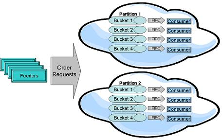
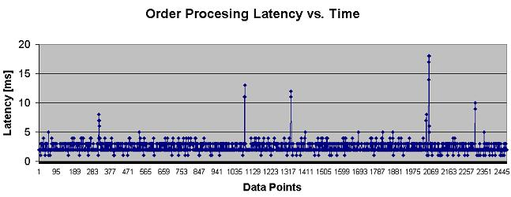
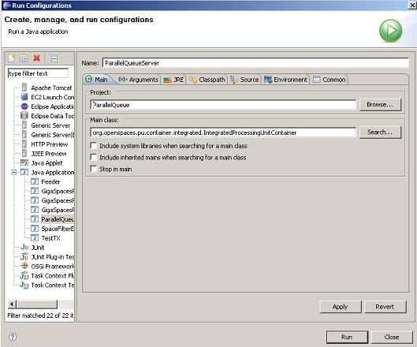
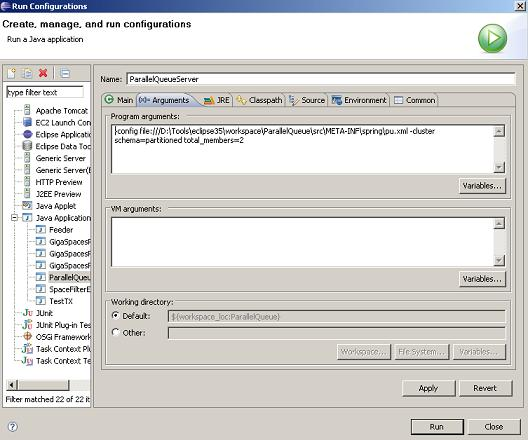
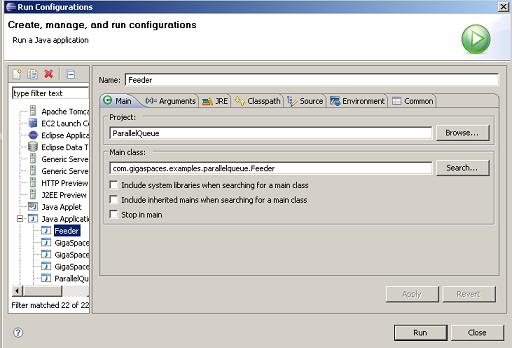

| Download |
|---|
| Order Management Processor |
When building low latency systems, a critical requirement of such systems is to be able to process the incoming data as fast as they can, but also to do that in the exact order the request has been submitted into the system. The system can't process requests associated with the same Order in parallel, but in the exact order these has been created at the client side.
Such a requirement would be relevant with algorithmic trading engines , Order Management Systems , Market Data processing system , High Speed inventory systems, etc.
GigaSpaces introduce the ability to partition data in memory across multiple data-grid partitions. This provides the ability to scale the system, but it does not ensure fast data processing in the correct order. You should add another component that allows the system to "slice" each partition into virtual queues or several buckets. The polling container consuming data in a FIFO manner is the missing required component.

Having multiple polling containers running collocated with each partition allows us to scale at the partition level, forming set of "virtual queues", that consume data pushed into the partition in a parallel manner, but also in the correct order. The amount of polling containers will be usually the number of machine cores. This will optimize the ability to use the machine CPUs in the most efficient manner.
With our example we will simulate a simple Order Management processing system where Orders are sent into the system. An order might have 5 states (state 1-5) where these should be processed in the correct order by a "processor". Different Orders (from different clients) should be processed in parallel, but requests associated with the same order MUST be processed in the exact order they have submitted by the end point client.
Here is an example for the latency duration for the Order request processing time:

The above results retrieved when running the Data-Grid with 4 partitions with a backup.
The following example illustrates a simple Order management processor that includes the following artifacts:
orderId field used to partition the Order requests (its getter method annotated with @SpaceRouting) between the partitions.
– The id used as the space object ID (its getter annotated with @SpaceID).
– The bucketId used to generate the buckets that each polling container consuming Orders from.
– The Order class is decorated with the FIFO mode allows it to be consumed in a FIFO manner.Order requests state until these are consumed by the polling containers. It provides the ability to scale the system and also provides high-availability.Symbol. Each associated with a different Symbol. These are running collocated with the Data-Grid.The bucketId is calculated using the following formula:
(first char of Symbol hashcode) % (# of machine cores)
You can run the Data-Grid with the collocated Order Processor within your IDE using the following configuration:

Here is a configuration for a data-grid with 2 partitions that will be running the polling containers:

You can run the Feeder within your IDE using the following configuration:

package com.gigaspaces.examples.parallelqueue;
import com.gigaspaces.annotation.pojo.FifoSupport;
import com.gigaspaces.annotation.pojo.SpaceClass;
import com.gigaspaces.annotation.pojo.SpaceId;
import com.gigaspaces.annotation.pojo.SpaceIndex;
import com.gigaspaces.annotation.pojo.SpaceRouting;
import com.gigaspaces.metadata.index.SpaceIndexType;
@SpaceClass(fifoSupport=FifoSupport.ALL)
public class Order {
String requestType;
String orderId;
Integer id;
String symbol;
Long sendTime;
Long ackTime;
Integer bucket;
public final static String requestTypes[] = new String []{"requestType1" , "requestType2" ,
"requestType3", "requestType4","requestType5"};
public final static String symbols[] = new String []{"AAA", "BBB", "CCC","DDD","EEE",
"FFF","GGG","HHH","III","JJJ","KKK","LLL","MMM", "NNN","OOO","PPP","QQQ", "RRR",
"SSS" , "TTT", "UUU", "VVV" , "WWW", "XXX" , "YYY", "ZZZ"};
public String getSymbol() {
return symbol;
}
public void setSymbol(String symbol) {
this.symbol = symbol;
setBucket(symbol.substring(0,1).hashCode() % ProcessorFactory.MACHINE_CORES_AMOUNT);
}
public Long getSendTime() {
return sendTime;
}
public void setSendTime(Long sendTime) {
this.sendTime = sendTime;
}
public Long getAckTime() {
return ackTime;
}
public void setAckTime(Long ackTime) {
this.ackTime = ackTime;
}
@Override
public String toString() {
return "Order ID:"+ orderId+ " symbol " + symbol + " sendTime " +
sendTime + " requestType "+requestType + " bucket" + bucket;
}
@SpaceRouting
public String getOrderId() {
return orderId;
}
public void setOrderId(String orderId) {
this.orderId = orderId;
}
@SpaceId(autoGenerate=false)
public Integer getId() {
return id;
}
public void setId(Integer requestOrderId) {
this.id = requestOrderId;
}
public String getRequestType() {
return requestType;
}
public void setRequestType(String requestType) {
this.requestType = requestType;
}
@SpaceIndex (type=SpaceIndexType.BASIC)
public Integer getBucket() {
return bucket;
}
public void setBucket(Integer bucket) {
this.bucket= bucket;
}
}
package com.gigaspaces.examples.parallelqueue;
import java.util.concurrent.atomic.AtomicInteger;
import org.openspaces.core.GigaSpace;
import org.openspaces.core.GigaSpaceConfigurer;
import org.openspaces.core.space.UrlSpaceConfigurer;
import org.springframework.scheduling.concurrent.ThreadPoolTaskExecutor;
public class Feeder implements Runnable{
static GigaSpace space = null;
static final int ORDERS_COUNT =20;
static AtomicInteger counter = new AtomicInteger(0);
public static void main(String[] args) {
space = new GigaSpaceConfigurer (new UrlSpaceConfigurer("jini://*/*/space")).gigaSpace();
int threadCount = 5;
ThreadPoolTaskExecutor tpExecutor = new ThreadPoolTaskExecutor();
tpExecutor.setCorePoolSize(threadCount);
tpExecutor.setMaxPoolSize(threadCount);
tpExecutor.setQueueCapacity(threadCount);
tpExecutor.afterPropertiesSet();
for (int i=0;i<threadCount;i++)
{
tpExecutor.execute(new Feeder());
}
tpExecutor.destroy();
}
public void run() {
System.out.println(Thread.currentThread() + " started");
for (int i=0;i<ORDERS_COUNT;i++)
{
for (int j=0;j<Order.requestTypes.length;j++)
{
try {
Thread.sleep(10);
} catch (InterruptedException e) {
}
Order o = new Order();
o.setOrderId(Thread.currentThread().getId() + "_" + i);
// If we use the Order ID both for the @SpaceID and
// @SpaceRouting fields we might end up updating the same object
o.setId(counter.incrementAndGet());
o.setSymbol(Order.symbols[i%Order.symbols.length]);
o.setSendTime(System.currentTimeMillis());
String requestType = Order.requestTypes[j] ;
o.setRequestType(requestType);
space.write(o);
System.out.println(Thread.currentThread() + " send Order " + o);
}
}
}
}
package com.gigaspaces.examples.parallelqueue;
import org.openspaces.core.GigaSpace;
import org.openspaces.events.SpaceDataEventListener;
import org.springframework.transaction.TransactionStatus;
public class Processor implements SpaceDataEventListener<Order>{
Processor(int bucket,int partitionID )
{
this.bucket= bucket;
this.partitionID=partitionID;
}
int bucket;
int partitionID ;
public void onEvent(Order order, GigaSpace space, TransactionStatus tx,
Object arg3) {
long time = System.currentTimeMillis() ;
long latency = time - order.getSendTime();
System.out.println("Time " +time + " partitionID " + partitionID +
" Bucket" + bucket + " Got order: "+ order + " Processing Time "+latency + " ms");
}
}
<?xml version="1.0" encoding="UTF-8"?>
<beans xmlns="http://www.springframework.org/schema/beans"
xmlns:xsi="http://www.w3.org/2001/XMLSchema-instance"
xmlns:context="http://www.springframework.org/schema/context"
xmlns:os-core="http://www.openspaces.org/schema/core"
xmlns:os-events="http://www.openspaces.org/schema/events"
xmlns:tx="http://www.springframework.org/schema/tx"
xmlns:os-remoting="http://www.openspaces.org/schema/remoting"
xmlns:os-sla="http://www.openspaces.org/schema/sla"
xsi:schemaLocation="http://www.springframework.org/schema/beans http://www.springframework.org/schema/beans/spring-beans.xsd
http://www.springframework.org/schema/context http://www.springframework.org/schema/context/spring-context-3.0.xsd
http://www.springframework.org/schema/tx http://www.springframework.org/schema/tx/spring-tx-2.0.xsd
http://www.openspaces.org/schema/core http://www.openspaces.org/schema/core/openspaces-core.xsd
http://www.openspaces.org/schema/events http://www.openspaces.org/schema/events/openspaces-events.xsd
http://www.openspaces.org/schema/remoting http://www.openspaces.org/schema/remoting/openspaces-remoting.xsd
http://www.openspaces.org/schema/sla http://www.openspaces.org/schema/sla/openspaces-sla.xsd">
<context:component-scan base-package="com.gigaspaces.examples.parallelqueue"/>
<bean id="factory" class="com.gigaspaces.examples.parallelqueue.ProcessorFactory" >
</bean>
<tx:annotation-driven transaction-manager="transactionManager"/>
<os-core:giga-space-context/>
<os-events:annotation-support />
<os-core:embedded-space id="space" name="space"/>
<os-core:local-tx-manager id="transactionManager" space="space"/>
<os-core:giga-space id="gigaSpace" space="space" tx-manager="transactionManager"/>
</beans>
package com.gigaspaces.examples.parallelqueue;
import java.util.ArrayList;
import java.util.Iterator;
import java.util.List;
import org.openspaces.core.GigaSpace;
import org.openspaces.core.cluster.ClusterInfo;
import org.openspaces.core.cluster.ClusterInfoContext;
import org.openspaces.core.context.GigaSpaceContext;
import org.openspaces.events.polling.SimplePollingContainerConfigurer;
import org.openspaces.events.polling.SimplePollingEventListenerContainer;
import org.springframework.beans.factory.InitializingBean;
public class ProcessorFactory implements InitializingBean{
public static final int MACHINE_CORES_AMOUNT = 4;
@GigaSpaceContext
GigaSpace space;
@ClusterInfoContext
ClusterInfo clusterInfo;
List<SimplePollingEventListenerContainer> pcList= new ArrayList<SimplePollingEventListenerContainer> ();
void createProcessor(int bucket)
{
int partitionID = 1;
if (clusterInfo != null)
partitionID = clusterInfo.getInstanceId();
Order template = new Order ();
template.setBucket(bucket);
Processor pc = new Processor(bucket, partitionID);
SimplePollingEventListenerContainer pollingEventListenerContainer =
new SimplePollingContainerConfigurer(space)
.template(template)
.eventListener(pc)
.pollingContainer();
System.out.println("Processor bucket" +bucket+" started on partition "+partitionID );
pcList.add(pollingEventListenerContainer);
}
@PostPrimary
public void init() throws Exception {
for (int i=0;i<MACHINE_CORES_AMOUNT ;i++)
{
createProcessor(i);
}
}
@PreDestroy
public void shutdown() {
for (SimplePollingEventListenerContainer simplePollingEventListenerContainer : pcList) {
simplePollingEventListenerContainer.destroy();
}
}
}
package com.gigaspaces.examples.parallelqueue;
import java.util.ArrayList;
import java.util.Iterator;
import java.util.List;
import javax.annotation.Resource;
import org.openspaces.core.GigaSpace;
import org.openspaces.core.cluster.ClusterInfo;
import org.openspaces.core.cluster.ClusterInfoContext;
import org.openspaces.core.context.GigaSpaceContext;
import org.openspaces.events.polling.SimplePollingContainerConfigurer;
import org.openspaces.events.polling.SimplePollingEventListenerContainer;
import org.springframework.beans.BeansException;
import org.springframework.beans.factory.InitializingBean;
import org.springframework.beans.factory.annotation.Autowired;
import org.springframework.context.ApplicationContext;
import org.springframework.context.ApplicationContextAware;
import org.springframework.transaction.PlatformTransactionManager;
public class ProcessorFactory implements InitializingBean{
public static final int MACHINE_CORES_AMOUNT = 4;
@GigaSpaceContext
GigaSpace space;
@ClusterInfoContext
ClusterInfo clusterInfo;
@Autowired
@Resource(name="transactionManager")
PlatformTransactionManager transactionManager;
List<SimplePollingEventListenerContainer> pcList= new ArrayList<SimplePollingEventListenerContainer> ();
void createProcessor(int bucket)
{
int partitionID = 1;
if (clusterInfo != null)
partitionID = clusterInfo.getInstanceId();
Order template = new Order ();
template.setBucket(bucket);
Processor pc = new Processor(bucket, partitionID);
SimplePollingEventListenerContainer pollingEventListenerContainer = new SimplePollingContainerConfigurer(space)
.template(template)
.eventListener(pc)
.transactionManager(transactionManager)
.pollingContainer();
System.out.println("Processor bucket" +bucket+" started on partition "+partitionID );
pcList.add(pollingEventListenerContainer);
}
@PostPrimary
public void init() throws Exception {
for (int i=0;i<MACHINE_CORES_AMOUNT ;i++)
{
createProcessor(i);
}
}
@PreDestroy
public void shutdown() {
for (SimplePollingEventListenerContainer simplePollingEventListenerContainer : pcList) {
simplePollingEventListenerContainer.destroy();
}
}
}